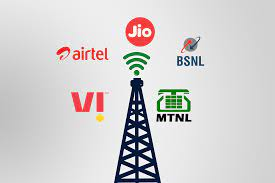

Electronics and Communication engineering deals with the electronic devices, circuits, communication equipments like transmitter, receiver, integrated circuits (IC). It also deals with basic electronics, analog and digital transmission & reception of data, voice and video (Example AM, FM, DTH), microprocessors, satellite communication, microwave engineering, antennae and wave progression. It aims to deepen the knowledge and skills of the students on the basic concepts and theories that will equip them in their professional work involving analysis, systems implementation, operation, production, and maintenance of the various applications in the field of Electronics and Communications Engineering.. What does an Electronics & Communication Engineer do? What is the scop of Electronics & Communication (ECE) in India & Overseas?Ever since the evolution of technology, Electronics and Communication have come to be a crucial area that’s required by all of the industries. Hence, Electronics and Communication Engineering are some of the most well-known branches by college students. So college students pursuing electronics and communication engineering have plenty of scope in numerous industries. Taking the educational scope and career choices into consideration, here are the famous regions of study in the subject of Electronics and Communication and their scope: |
|
Internet of ThingsIoT is creating unification in society. Today, IoT is being applied anywhere that is of human issues like smart city, security, smart agriculture and domestic automation. This has created lots of buzz amongst industries and now all the groups are seeking out applicants who have practical experience in IoT. |
 |
 |
RoboticsThanks to the capability of robotics in today’s industry, the scope for career development is multifaceted. Machine learning ties well with AI to shape a strong ability set for an aspiring ECE professional! Now, most of the corporations are turning their attention in the direction of robots in place of human beings to carry out precise jobs simply to lessen their costs and to increase productivity. |
Digital Image ProcessingMage processing offers the processing of virtual images with the aid of computer algorithms. Recently added face detection unlock in smartphones nowadays makes use of image processing algorithms to locate an image and carry out particular tasks. This area has plenty of possibilities for the future. |
 |
 |
Sustainable Energy and Power Systems:Humankind is highly dependent on electricity, however burning substances to make electricity is detrimental to our environment. Electrical engineers are working towards creating better solar cells and windmills, to reap electricity from tides and lots of different non-polluting sources. The smart grid is another engineering approach to greater efficient energy use, to save the planet.. |
Telecom SectorThe subject of telecommunications is a promising area in terms of the job possibilities that it brings to the table. Since everything is about smartphones and portable connectivity these days, there’s no scarcity of job possibilities here! You could even go directly to work for global corporations like Verizon. |
 |
VLSI DesignThis brach of ECE can pave the way for you through a promising profession in computer design. The area of VLSI is a distinctly specialized area of interest that opens doorways to jobs with technical understanding and analyst job profiles. |
|
Large Scale ElectronicsSince today’s electronics are becoming smarter, able specialists are the need of the hour for smooth navigation throughout the field. The high-quality colleges for electronics and communication engineering will equip you with the best understanding to soar high and excel in this professional path! |
|
Network CommunicationsEverything these days is network-related and based on cloud computing. The basis of this technology is the concept of digital communication. There’s a lot of untapped potential right here and there’s room for anybody to flourish in their career. |
|